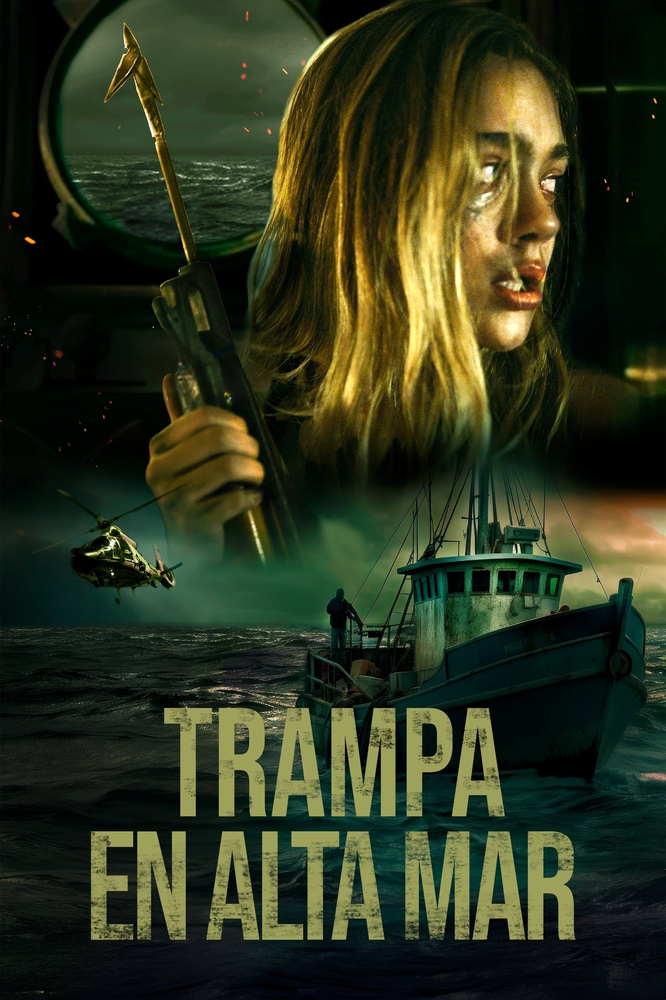

Mi villano favorito 4 es una película de comedia animada estadounidense producida por Illumination y distribuida por Universal Pictures. Sirve como secuela de Mi villano favorito 3, la cuarta entrega principal y la sexta entrega en general de la franquicia.

Tras un accidente mortal, un trío de amigos se encuentra varado en alta mar. La salvación aparece cuando los rescata el capitán de un barco pesquero. Pero su alivio se convierte en pesadilla cuando descubren que el refugio alberga un oscuro secreto.